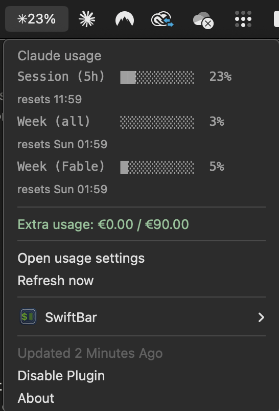
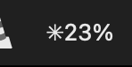

Claude usage in your menu bar
🔍 Overview
A SwiftBar plugin that shows your Claude Code plan usage and rate limits right in the macOS menu bar, so you see a limit coming before you hit it. The menu bar shows your worst limit as one compact percentage (✳23%), which turns orange at 80% and red at 95%. Click it for the full breakdown.


One glanceable number in the menu bar; the full picture on click.
✨ What it shows
- Session (5h): the rolling 5-hour limit, with its reset time
- Week (all models): the weekly limit across every model
- Week (per model): scoped weekly limits (like Fable or Opus) when your plan has them
- Extra usage credits: spend against your configured credit cap
- Color-coded severity: green normally, orange at 80%, red at 95%, so a wall is visible early
- Configurable refresh: rename the file to
.1m.jsor.30s.jsfor faster updates (default 5 minutes)
🔒 How it works, and privacy
The plugin reads your Claude Code OAuth token from the macOS Keychain (the Claude Code-credentials item that Claude Code itself creates) and calls the same usage endpoint the /usage command uses. Your token never leaves your machine, is never written to disk, and nothing is sent anywhere except Anthropic's own API.
🛠️ Install
Needs macOS, SwiftBar (brew install --cask swiftbar), Node.js 18+ (brew install node), and Claude Code signed in. Then:
git clone https://github.com/BRONDIJKxyz/claude-usage-swiftbar.gitcd claude-usage-swiftbar && ./install.sh
The installer finds your Node, pins the plugin's shebang to it (SwiftBar runs plugins with a minimal PATH), copies it into your SwiftBar plugin folder, and launches SwiftBar.